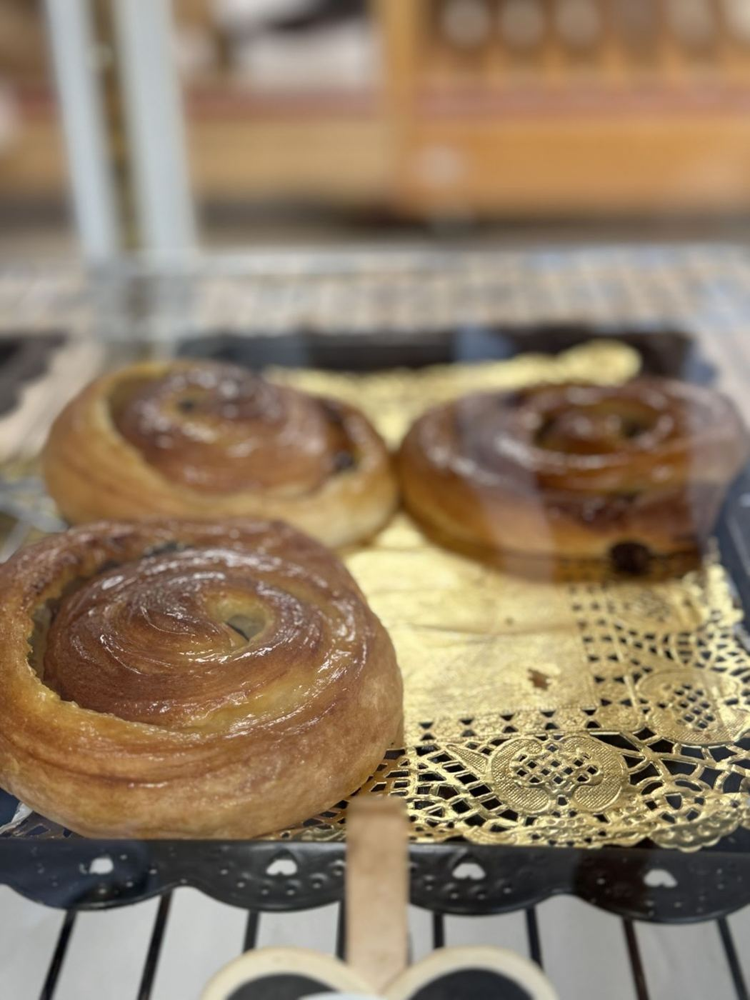
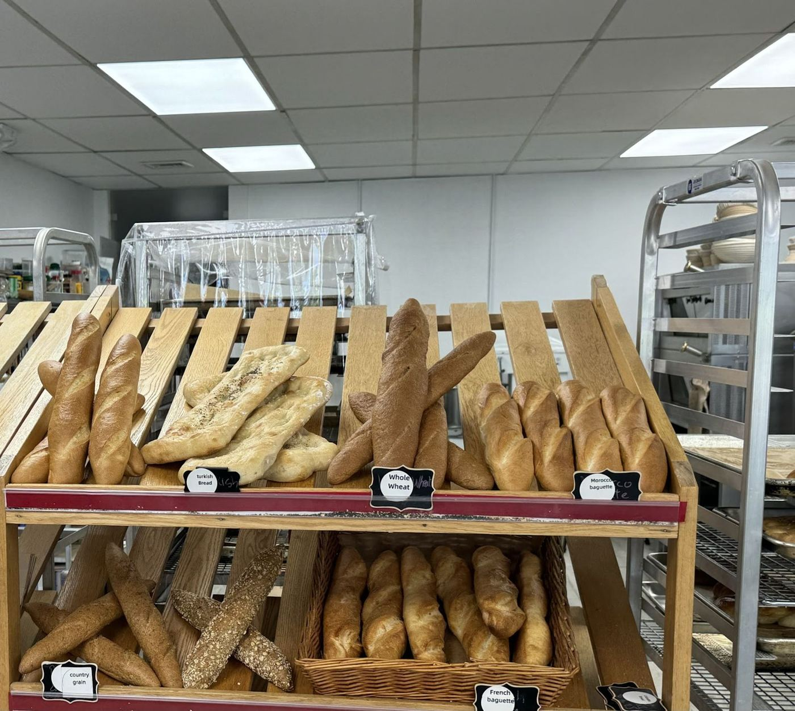
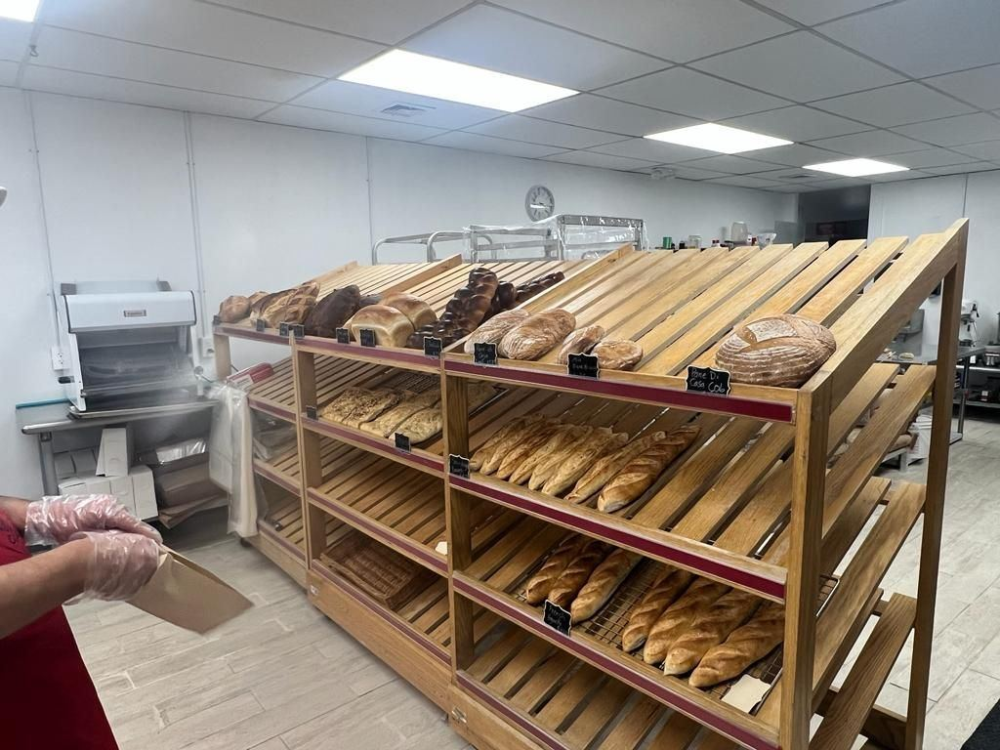

Moroccan bakery · Greenwich, CT
Bread, baklava & amour
A small Moroccan bakery on West Putnam Avenue — not overly sweet, generous with samples. 5.0★ from 26 Google reviews.
Call the bakeryDirections
From our ovens




Kind words
I was invited by a friend that lives nearby to check this little Moroccan Bakery, what a delight! Service was friendly and we were given different pastries to taste. I got their sourdough baguette and a cup of fresh mint tea, my friend took home a variety of moroccan sweets and we left feeling happy to have spotted it. It is a small window-front, I drove by several times without seeing it, glad I did now. The place is super casual and friendly, their pastries are delicious. Did not try any of their sandwiches, maybe next time. Love it!
What a treat! Not overly sweet and made with almond or walnut flour. The owner was very generous in giving us samples as this was our first time there. I loved all the little cookies and can't wait to come for breakfast and have a cappuccino and a pastry or sandwich. A go to place. Exotic and natural taste.
My husband and I saw an online review of this bakery and decided to give it a try. The cookies, baklava, etc. are all very delicious and made with high quality ingredients. Absolutely delicious when gotten fresh out of the oven! The chef and her husband are both incredibly warm, welcoming, charming and hospitable, offering samples as well. We have been back weekly since our first visit and have told our relatives and friends as well about Amour - it is a little gem!